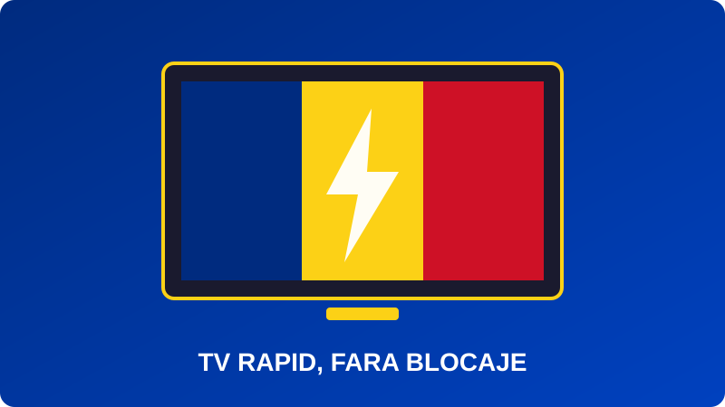
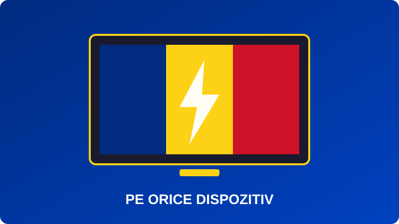

Daca locuiesti in afara tarii si vrei sa vezi canalele de acasa fara intarzieri, probabil ai cautat deja fast iptv. Tot mai multi romani renunta la cablu si parabola si aleg IPTV, pentru ca este simplu, flexibil si merge pe televizor, telefon sau tableta, oriunde ai internet.
In acest ghid explicam ce inseamna fast iptv, ce viteza de internet ai nevoie, cum pornesti canalele mai repede, ce dispozitive alegi si cum eviti listele gratuite lente sau nesigure. Totul este scris pentru romani, cu accent pe diaspora si pe canale romanesti.
La final ai si un test gratuit prin WhatsApp, ca sa verifici viteza inainte de abonare. Daca esti la inceput, citeste mai intai iptv romania, apoi revino aici.

Cuprins
- Ce este fast iptv?
- Ce canale romanesti primesti
- Ce viteza de internet ai nevoie
- Cum pornesc canalele mai repede
- Pe ce dispozitive merge cel mai bine
- Liste gratuite sau abonament verificat
- De ce sa alegi Romania IPTV
- Fast iptv pentru romanii din diaspora
- Greseli frecvente de evitat
- Probleme frecvente si solutii rapide
- Cum optimizezi Wi-Fi-ul acasa
- Comparatie rapida: cablu, satelit si IPTV
- Cum alegi un furnizor bun
- Ce emisiuni urmaresc romanii
- Mituri despre IPTV rapid
- Cat costa si ce include abonamentul
- Intrebari frecvente
- Concluzie
Ce este fast iptv?
Cand cauti fast iptv, vrei de fapt televiziune care porneste imediat, nu se blocheaza si arata bine pe orice ecran. Nu este un produs cu un singur nume, ci o promisiune: canale incarcate in cateva secunde, imagine fluida si zapping rapid intre posturi.
Cum functioneaza IPTV
Furnizorul transmite canalele prin internet de pe servere puternice. Tu introduci datele de acces intr-o aplicatie, iar lista se incarca. Cu cat serverul este mai bun si conexiunea ta mai stabila, cu atat fast iptv este mai rapid.
De ce conteaza viteza
Un serviciu lent te face sa pierzi golul, replica sau finalul serialului. De aceea romanii din diaspora cauta fast iptv: vor sa vada emisiunile de acasa exact la ora lor, fara intarzieri.
Ce canale romanesti primesti
Viteza nu inseamna nimic fara continut. Un pachet bun de fast iptv trebuie sa includa lista larga de canale romanesti, nu doar cateva posturi populare.
Generaliste si divertisment
Pro TV, Antena 1, Kanal D, Prima TV si Acasa TV aduc telenovele, seriale si emisiuni de divertisment.
Stiri si sport
Digi24, Antena 3 CNN, Realitatea si canalele Digi Sport completeaza oferta. Pentru sport, citeste si eurosport iptv si espn iptv.
Filme, desene si documentare
Familia intreaga isi gaseste canalul preferat, de la desene in limba romana pana la documentare si muzica.
Ce viteza de internet ai nevoie
Primul pas pentru un fast iptv stabil este conexiunea. Iata valorile orientative:
| Calitate | Viteza minima | Recomandare |
|---|---|---|
| SD | 5 Mbps | Telefon |
| HD | 10 Mbps | Smart TV |
| 4K | 25 Mbps | Cablu de retea |
Cum testezi viteza
Ruleaza un test de viteza pe dispozitivul pe care vezi TV, la ora la care urmaresti de obicei. Seara, retelele sunt mai aglomerate decat dimineata.
Cablu sau Wi-Fi
Cablul Ethernet ramane cea mai buna solutie pentru televizorul principal. Pentru Wi-Fi, foloseste banda de 5 GHz si apropie routerul de dispozitiv.
Cum pornesc canalele mai repede
Chiar si cu un serviciu bun, setarile locale pot incetini fast iptv. Aplica pasii de mai jos.
- Conecteaza dispozitivul prin cablu de retea.
- Actualizeaza aplicatia player la ultima versiune.
- Sterge cache-ul aplicatiei o data pe luna.
- Pastreaza doar categoriile de canale pe care le folosesti.
- Reporneste routerul si boxul periodic.
Ghid TV (EPG)
Un ghid TV incarcat o singura data, la pornire, nu mai intarzie zapping-ul. Detalii in articolul epg iptv.
Memorie si spatiu liber
Dispozitivele cu memorie plina se misca greu. Dezinstaleaza aplicatiile nefolosite si lasa cel putin 20% spatiu liber.
Pe ce dispozitive merge cel mai bine
Aceleasi date de acces functioneaza pe mai multe aparate, in limita conexiunilor din abonament.
Smart TV si box Android
Cea mai buna experienta pe ecran mare. Un box Android recent are procesor rapid si porneste canalele aproape instant; vezi android box iptv.
Fire TV Stick
Alegere populara, ieftina si usor de instalat, potrivita pentru orice televizor cu HDMI.
Telefon, tableta si calculator
Perfect pentru jurnalul de seara in deplasare sau un meci in pauza de pranz.

Liste gratuite sau abonament verificat
Multi cauta liste gratuite pentru fast iptv, dar ele sunt rareori rapide. Sute de utilizatori se conecteaza la acelasi server, iar canalele cad des.
Ce primesti cu un abonament
Servere dedicate, canale actualizate, ghid TV si ajutor pe WhatsApp. Pentru comparatii cu alti furnizori europeni, vezi greek iptv si tilaa iptv.
De ce sa alegi Romania IPTV
Daca vrei fast iptv potrivit pentru romani, conteaza accentul pe continut local. Romania IPTV este construit pentru audienta din tara si din diaspora.
Suport in limba romana
Raspundem pe WhatsApp, in limba ta, cu pasi clari pentru fiecare dispozitiv.
Test gratuit
Nu platesti nimic pana nu vezi ca imaginea este fluida. Cere testul si decide dupa.
Canale actualizate
Lista este verificata constant, iar canalele cazute sunt inlocuite rapid. Daca esti la inceput, citeste mai intai iptv romania.
Fast iptv pentru romanii din diaspora
Cu fast iptv nu mai depinzi de pachetele locale din Germania, Italia, Spania sau Marea Britanie. Poti vedea aceleasi emisiuni ca acasa, in aceeasi zi.
Pentru familii
Copiii vad desene in limba romana, iar parintii urmaresc stirile si telenovelele preferate.
Pentru cei mutati des
Contul merge in orice tara cu internet bun. Despre acoperirea europeana, citeste euro iptv.
Greseli frecvente de evitat
Alegerea doar dupa pret
Un pret foarte mic ascunde adesea servere suprasolicitate. Cu fast iptv conteaza raportul dintre pret, canale si suport.
Ignorarea retelei de acasa
Multe blocaje vin din Wi-Fi slab, nu din serviciu. Testeaza intai conexiunea.
Depasirea numarului de conexiuni
Respecta limita din abonament, altfel transmisia se poate opri.
Folosirea unui VPN fara motiv
Un VPN lent adauga intarziere. Foloseste-l doar daca este necesar.
Probleme frecvente si solutii rapide
Imaginea se opreste sau se blocheaza
Verifica viteza, reporneste routerul si inchide aplicatiile care consuma banda. Daca persista, scrie-ne pe WhatsApp.
Lista de canale nu se incarca
Verifica datele de acces, fara spatii in plus, apoi sterge lista si adaug-o din nou.
Sunetul este decalat
Schimba pista audio din player sau reporneste aplicatia.
Canalul porneste greu
Curata cache-ul, treci pe cablu si cere un alt server. Un fast iptv bun schimba serverul fara taxe.
Cum optimizezi Wi-Fi-ul acasa
Cele mai multe plangeri legate de fast iptv vin din reteaua de acasa, nu din serviciu. Cateva ajustari simple rezolva majoritatea problemelor.
Pozitia routerului
Pune routerul in camera principala, la inaltime, departe de cuptorul cu microunde sau telefoanele fara fir, care produc interferente.
Banda de 5 GHz
Conecteaza televizorul sau boxul la banda de 5 GHz. Este mai rapida si mai putin aglomerata decat 2,4 GHz, mai ales in blocuri unde fiecare apartament are propriul router.
Repetoare si Powerline
Daca televizorul este departe de router, un adaptor Powerline sau un sistem Mesh ofera semnal mai stabil decat un repetor simplu.
Comparatie rapida: cablu, satelit si IPTV
| Criteriu | Cablu | Satelit | IPTV |
|---|---|---|---|
| Instalare | Tehnician | Parabola | Doar aplicatie |
| Contract | 12-24 luni | 12 luni | Flexibil |
| Mobilitate | Nu | Nu | Da, oriunde |
| Canale romanesti | Putine | Limitat | Lista larga |
Dupa cum se vede, fast iptv castiga la flexibilitate si la acces la canalele din Romania, iar viteza de pornire a canalelor depinde mai mult de conexiunea ta decat de tehnologie.
Cum alegi un furnizor bun
Inainte sa platesti pentru fast iptv, verifica cateva lucruri simple. Un furnizor serios raspunde repede, ofera test si explica clar ce include abonamentul.
Lista de verificare
- Exista test gratuit, fara card?
- Lista de canale romanesti este actuala si completa?
- Ai suport pe WhatsApp in limba romana?
- Poti folosi serviciul pe mai multe dispozitive?
- Pretul este clar, fara taxe ascunse?
Semnale de alarma
Fii atent la oferte prea bune ca sa fie adevarate, la lipsa oricarui contact si la cereri de plata prin metode neobisnuite. Un furnizor de incredere nu te grabeste niciodata sa platesti fara sa testezi.
Cat dureaza activarea
De obicei, dupa confirmarea platii primesti datele de acces in cateva minute, iar dupa instalarea aplicatiei poti urmari canalele imediat.
Ce emisiuni urmaresc romanii
Cine cauta fast iptv vrea, de multe ori, sa nu piarda programele care conteaza. Iata ce urmaresc cel mai des romanii din diaspora.
Telenovele si seriale
Serialele de la Pro TV, Antena 1 si Kanal D aduna milioane de privitori in fiecare seara. Cu IPTV le poti vedea in aceeasi zi, la aceeasi ora ca in Romania.
Jurnale si dezbateri
Stirile de seara si emisiunile de dezbatere ii tin pe romanii plecati aproape de ce se intampla acasa, in timp real.
Emisiuni de weekend
Show-urile de talente, emisiunile culinare si programele de divertisment fac din seara de weekend un moment de familie, chiar daca esti la mii de kilometri.
Programe pentru copii
Desenele in limba romana ajuta copiii crescuti in strainatate sa pastreze limba vie.
Mituri despre IPTV rapid
In jurul termenului fast iptv circula cateva idei gresite care te pot costa timp si bani. Le clarificam pe rand.
Mit: un pret mai mare inseamna mereu viteza mai buna
Nu neaparat. Viteza depinde de infrastructura furnizorului si de reteaua ta. Un abonament scump, folosit pe un Wi-Fi slab, tot se va bloca.
Mit: 4K este mereu mai greu de rulat
Un canal 4K cere mai multa banda, dar pe o conexiune de 50 Mbps, cu cablu, ruleaza fara probleme. Problema apare doar cand reteaua este impartita cu alte aparate.
Mit: doar boxurile scumpe sunt rapide
Un box de buget mediu cu procesor recent si memorie suficienta ofera rezultate foarte bune. Conteaza mai mult actualizarea aplicatiei si conexiunea prin cablu.
Mit: listele gratuite sunt la fel de bune
Listele publice sunt folosite de mii de oameni simultan, deci canalele pornesc greu si cad exact cand ai nevoie, de exemplu la un meci important.
Cat costa si ce include abonamentul
Pretul pentru fast iptv depinde de durata si de numarul de conexiuni. Abonamentele pe 6 sau 12 luni au un cost lunar mai mic, iar familiile pot alege mai multe conexiuni.
Ce ar trebui sa includa
Canale romanesti HD, ghid TV, filme si seriale la cerere, suport pe WhatsApp si actualizari continue, fara costuri ascunse.
Intrebari frecvente
Ce inseamna fast iptv?
Este un termen folosit pentru servicii IPTV care pornesc canalele repede si ruleaza fluid, fara blocaje. Viteza depinde de server, de internet si de aplicatia folosita.
Cat de repede trebuie sa fie internetul pentru fast iptv?
Minimum 5 Mbps pentru SD, 10 Mbps pentru HD si 25 Mbps pentru 4K. Pentru sport live recomandam cablu de retea si o marja de siguranta de 30%.
De ce se blocheaza imaginea la un serviciu IPTV?
Cauzele frecvente sunt Wi-Fi-ul aglomerat, serverul supraincarcat, aplicatia veche sau limitarea vitezei de catre furnizorul de internet. Cablul si o aplicatie actualizata rezolva cele mai multe cazuri.
Cum fac canalele sa porneasca mai repede?
Foloseste cablu Ethernet, un player actualizat, memorie libera pe dispozitiv si o lista de canale curatata. Reporneste routerul periodic.
Ce dispozitiv este cel mai rapid pentru IPTV?
Un box Android sau un Fire TV Stick recent, conectat prin cablu, ofera de obicei cele mai bune rezultate. Smart TV-urile vechi pot fi mai lente.
Primesc canale romanesti cu fast iptv?
Da, daca alegi un furnizor orientat spre romani, precum Romania IPTV, cu Pro TV, Antena 1, Kanal D, Digi24 si Digi Sport.
Este legal un serviciu IPTV?
Tehnologia IPTV este legala. Alege un furnizor transparent, cu suport real, si evita sursele necunoscute.
Exista test gratuit?
Da, poti cere un test pe WhatsApp, fara card si fara contract, ca sa verifici viteza si calitatea imaginii inainte de abonare.
Testeaza gratuit canalele romanesti
Scrie-ne pe WhatsApp si primesti acces de test, fara card si fara contract.
Cere testul pe WhatsAppConcluzie
Pe scurt, fast iptv inseamna un serviciu stabil, o conexiune buna si setari corecte. Cu cablu, aplicatie actualizata si un furnizor de incredere, canalele romanesti pornesc repede si ruleaza fluid.
Daca vrei sa incerci, scrie-ne pe WhatsApp si cere un test cu Romania IPTV. Mai multe ghiduri gasesti in blog.
Citeste si: evo iptv.